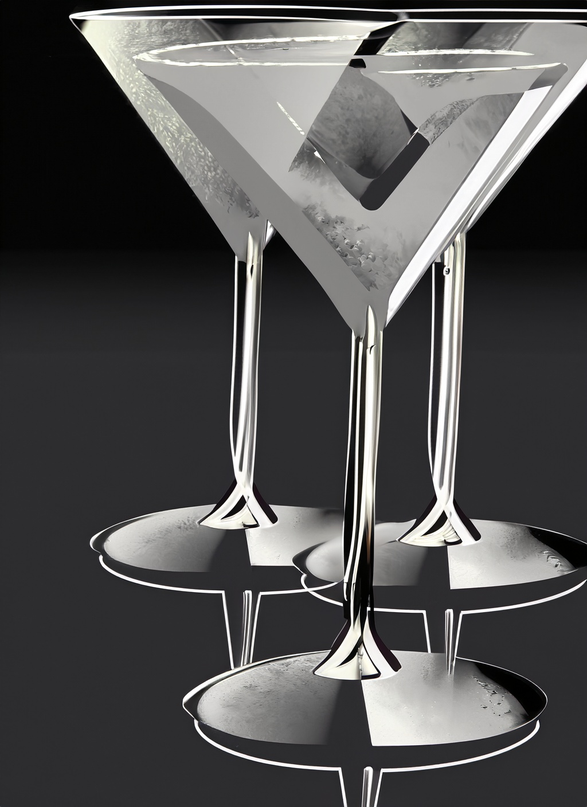

Main page
“Website” has been designed to be appealing to both cocktail novices and for people with experience in the bar industry. Are you looking to get to know some of the classic cocktail recipes or maybe you are looking for a recipe with a specific flavor profile. On the bottom of the page you will find several buttons where you can choose a flavor and then a type of spirit to help yopu find the perfect cocktail for you